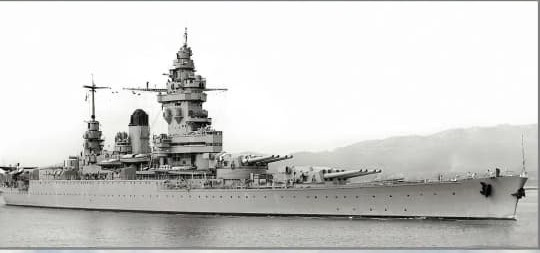
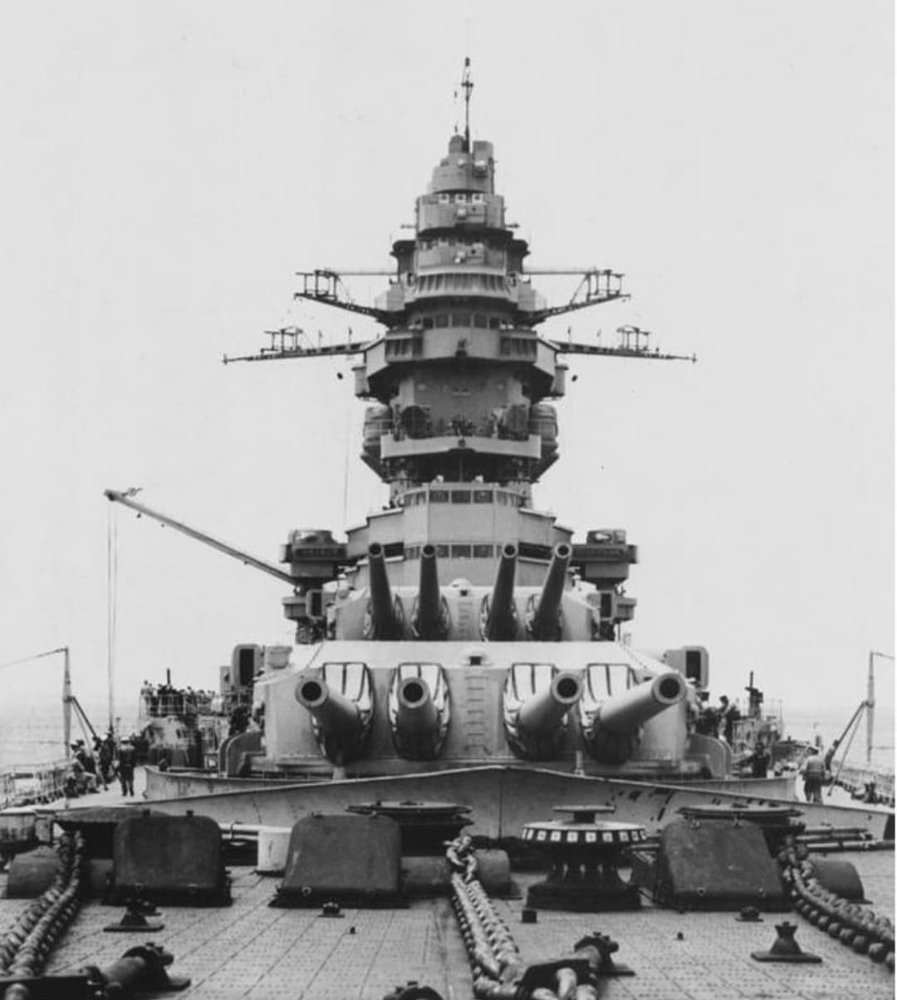
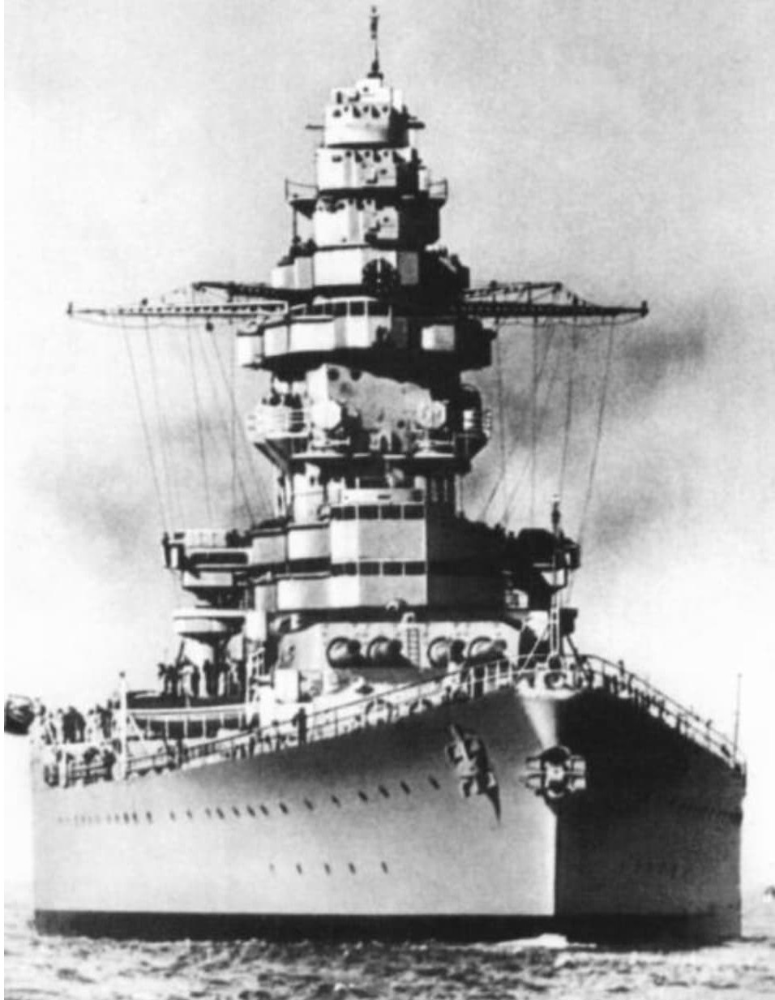
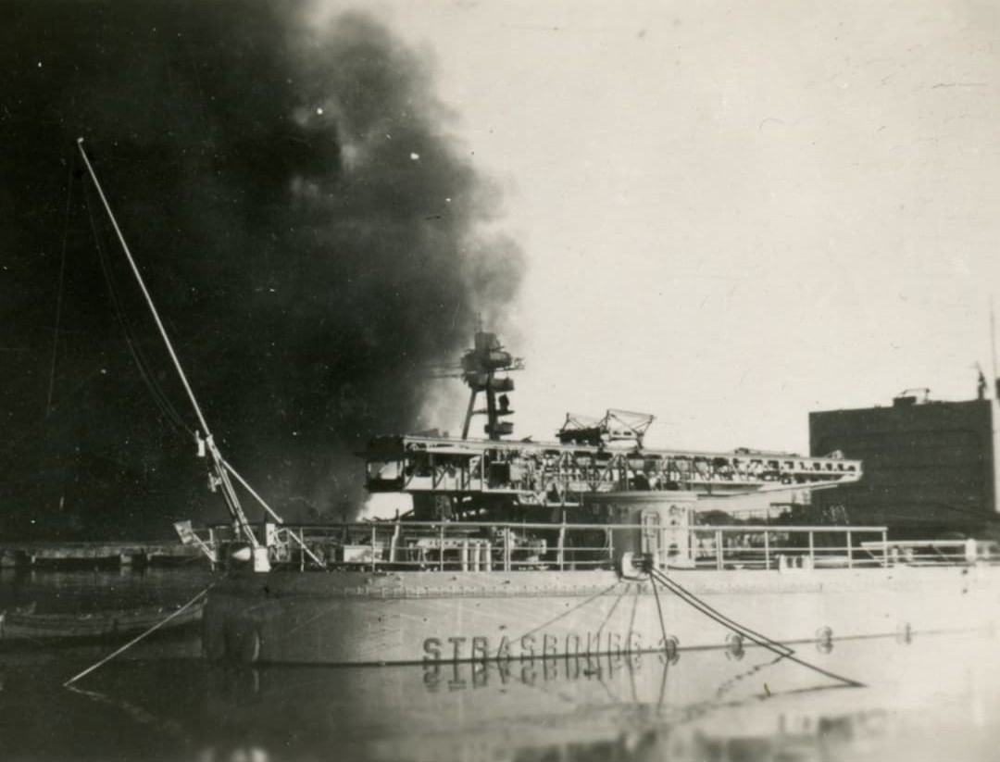

Cette fiche présente le second cuirassé rapide de la classe Dunkerque, conçu dans le cadre de la modernisation de la Marine nationale face aux menaces croissantes en Méditerranée et en Atlantique. Les informations ci‑dessous sont exposées dans un cadre strictement historique et documentaire, conformément aux exigences muséales de neutralité et de contextualisation.
Le Strasbourg reprend l’architecture du Dunkerque mais avec un blindage renforcé, une meilleure protection interne et plusieurs améliorations destinées à accroître sa survivabilité. Navire amiral à plusieurs reprises, il joue un rôle majeur entre 1938 et 1942, notamment lors de l’attaque de Mers‑el‑Kébir où il parvient à s’échapper sous le feu britannique.
Le Strasbourg est le second cuirassé de la classe Dunkerque, conçu pour contrer les croiseurs lourds italiens et les cuirassés rapides. Mis en service à la fin des années 1930, il reprend la silhouette élégante du Dunkerque, mais avec un blindage renforcé et une meilleure protection des soutes.
Navire amiral de la flotte française à plusieurs reprises, il joue un rôle majeur durant la période 1939–1942, notamment lors de l’attaque britannique de Mers-el-Kébir.


Comme le Dunkerque, le Strasbourg concentre toute son artillerie principale à l’avant, avec deux tourelles quadruples de 330 mm. Cette configuration permet de délivrer une salve très puissante vers l’avant, tout en réduisant la longueur de la citadelle blindée.

La silhouette du Strasbourg est très proche de celle du Dunkerque : proue élancée, tourelles massives à l’avant, superstructure compacte et cheminée unique. Les différences se situent surtout dans le détail du blindage et des aménagements internes, pensés pour améliorer la survivabilité du navire.

Le 3 juillet 1940, la flotte française à Mers-el-Kébir est attaquée par la Royal Navy. Le Strasbourg, amarré aux côtés du Dunkerque, parvient à s’échapper sous le feu britannique, malgré les explosions et les incendies autour de lui.
Après Mers-el-Kébir, le Strasbourg est basé à Toulon. En novembre 1942, lors de l’invasion de la zone libre par les forces de l’Axe, la flotte française se saborde pour éviter la capture. Le Strasbourg est incendié, renfloué, puis détruit par les bombardements alliés.
Page du Musée HOP WW2 – Section navires français